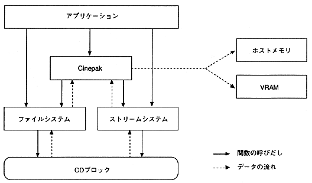

Since the Cinepak library does not control the stream, use an application program to open a file or move a pickup (prefetching a file).
Also, since display control is not performed, use the application program to initialize sprites and set sprite commands.
The Cinepak library performs expansion processing to specified addresses and audio playback processing while synchronizing AV from movie files on memory or CD.